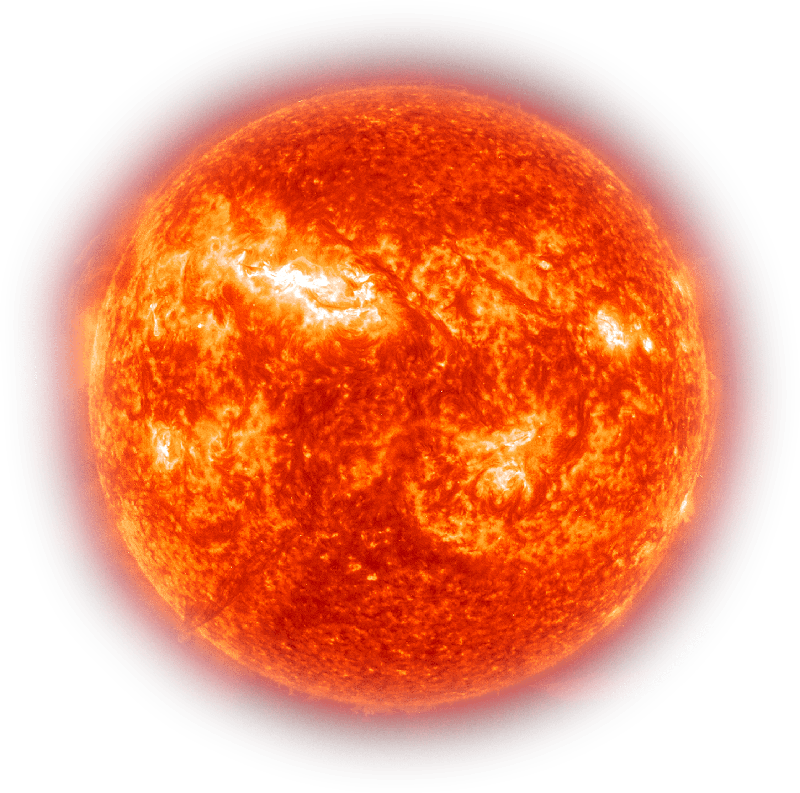
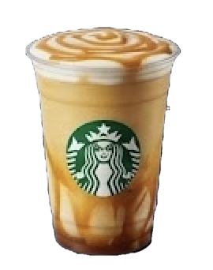
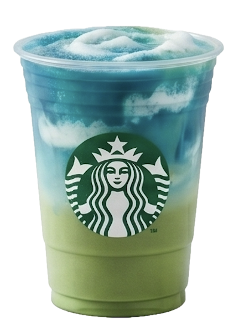
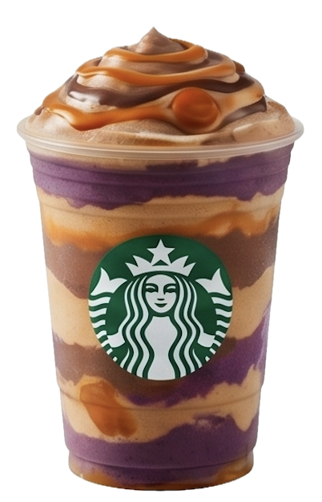
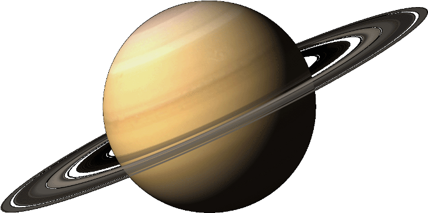
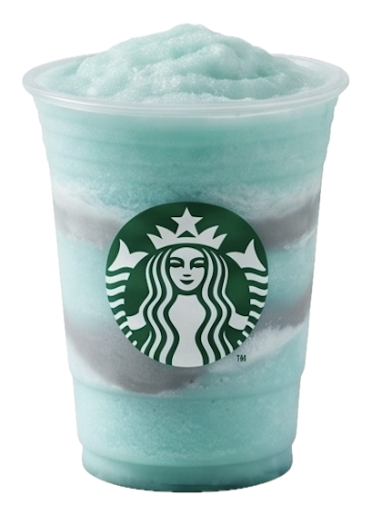
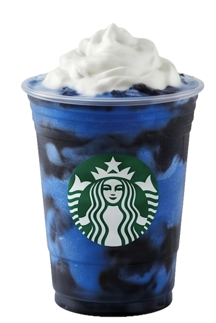
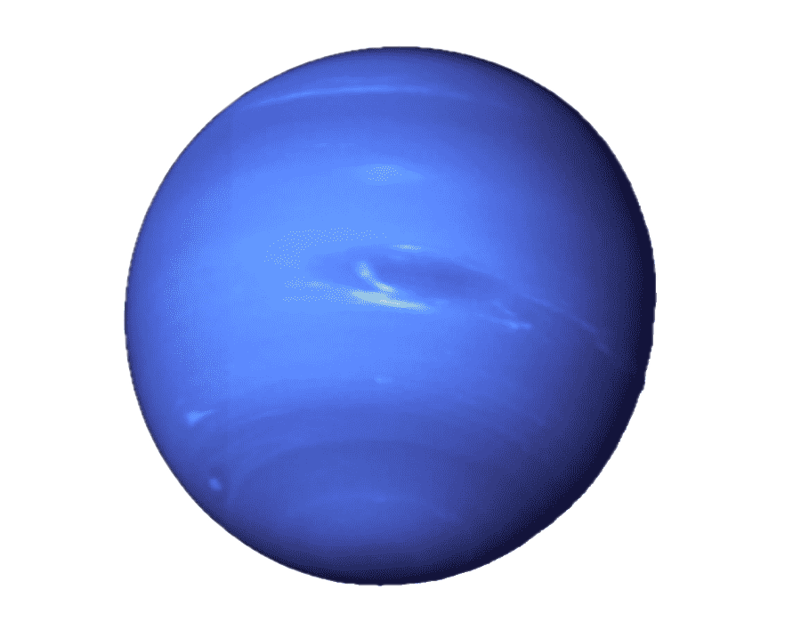

STARBUCKS x SpaceX
WELCOME TO THE GALAXY
WELCOME TO THE GALAXY
BEYOND THE STARBUCKS
TAP THE ROCKET TO START JOURNEY


SPECIAL EDITION
GALAXY DRINK ARCHIVE
Solar Flare Refresh
태양의 뜨거운 에너지를 담은 상큼한 리프레셔

MERCURY ESPRESSO
수성의 궤도처럼 빠르고 강렬한 에스프레소


VENUS VELVET LATTE
금성의 아름다움을 닮은 부드러운 벨벳 라떼


TERRA COLD BREW
푸른 지구의 청량함을 담은 테라 콜드 브루

MARS BERRY CRUSH
화성의 붉은 모래를 연상시키는 베리 크러쉬


JUPITER GOLDEN CREAM
목성의 거대한 오라를 담은 달콤한 골든 크림


SATURN RING TEA
토성의 신비로운 고리를 닮은 은은한 링 티


URANUS MINT CHILLER
천왕성의 얼음 빙하를 담은 상쾌한 민트 칠러


NEPTUNE DEEP BLUE
해왕성의 깊고 푸른 바다를 담은 딥 블루
